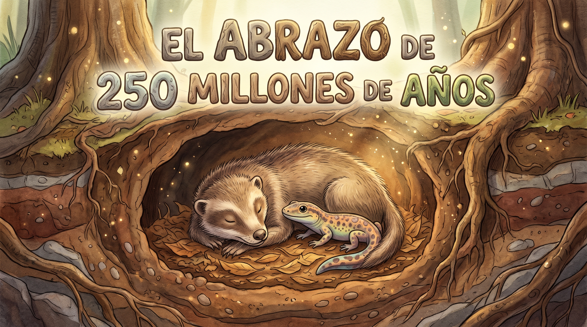

El Abrazo De 250 Millones De Años
El Abrazo De 250 Millones De Años
Hace unos 250 millones de años, cuando la Tierra atravesaba una de las extinciones más devastadoras de su historia, un pequeño anfibio herido buscaba un lugar donde refugiarse. Tenía varias costillas fracturadas y necesitaba encontrar un rincón seguro donde descansar, lejos de los peligros de aquel mundo.
Después de llegar a una madriguera, encontró algo inesperado: allí dormía un Thrinaxodon, un antiguo pariente de los mamíferos. A pesar de que el anfibio podía convertirse en su presa, el pequeño visitante terminó quedándose junto a él, acurrucado en aquel refugio.
El Broomistega, como se llamaba el anfibio, estaba herido y necesitaba protección. El otro animal permaneció allí sin atacarlo. No hubo señales claras de una lucha ni de que uno hubiera intentado alimentarse del otro. En medio de un mundo hostil, dos criaturas que podrían haber sido enemigas terminaron compartiendo el mismo escondite.
Pero ninguno sabía lo que estaba por suceder.
Una inundación hizo que el barro invadiera la madriguera y los sepultara. Los dos animales quedaron atrapados allí, juntos, y sus cuerpos permanecieron ocultos durante millones de años. Nunca se pudo determinar con certeza si el Thrinaxodon ya había muerto cuando llegó el anfibio o si ambos murieron durante el mismo acontecimiento.
En 2013, científicos descubrieron sus restos fosilizados en Sudáfrica. Al estudiar la roca, encontraron los esqueletos de aquellas dos criaturas conservados uno junto al otro, como una pequeña escena detenida en el tiempo.
Quizá para ellos solo fue un refugio compartido. Pero hoy, después de tanto tiempo, su historia nos permite imaginar a un pequeño animal herido que encontró un lugar junto a otro ser vivo y terminó permaneciendo a su lado mucho más allá de su propia existencia.
El mundo que conocieron desapareció, sus huellas se borraron y casi todo lo que los rodeaba dejó de existir. Sin embargo, ellos permanecieron juntos bajo la tierra durante 250 millones de años, hasta que alguien los encontró.
Y todavía hoy, en el silencio de aquella roca, parece conservarse el recuerdo de dos vidas que coincidieron en el momento más inesperado y quedaron unidas para siempre.
⏳ La IA está leyendo y evaluando tus respuestas... ¡Espere un momento!